"What the heck is that guy playing? He played the song and then began playing all those notes. What's going on?"
What's going on is called improvisation. All of "those notes" came from the chords (and the scales they come from) that were chosen by the composer to harmonize the song. Jazz music has improvisation at its heart. Improvising (i.e. creating new music on the spot) may also be described as spontaneous composition. With few exceptions, you've learned all of the chords and scales jazz players use to improvise in your theory classes. No kidding! The main difference between classical music theory and jazz music theory is that classical music theory is used to describe music that has already been written while jazz music theory is used to create new music. The materials are the same. An F chord in J.S. Bach's music is the same as an F chord in Miles Davis' music.
The most important and widely used material in jazz improvisation comes from the major scale, its modes and chords. I'm aware of the fact that most, if not all, college music theory programs discuss major scale modes for about 30 minutes total in all four semesters. The same was true when I took music theory sometime during the last century! This Jazz Theory Basics section is not designed to turn you into an improviser but to refresh your memory of those scales (modes) and chords and to help you to understand what chord symbols mean so that you have an idea as to what's going on in the jazz player's head.
Starting on each note of a major scale and playing up an octave—seven notes—resulting in seven modes (one mode per scale step) creates the modes of the major scale. Don't be confused by the fact that these new scales are called modes. Since the modes share the same notes in the same specific order as the major scale from which they are derived, it's clear that the modes are a specific group of inter-related or diatonic scales. In popular music, pop, jazz, etc, a mode is a scale, a scale is a mode.
Each mode of the major scale—the major scale itself included—has a name attached to it. As the name "major scale" implies a specific set of whole and half steps, so to do the ancient Greek names that have been given to each mode of the major scale:
1st scale step – the Ionian mode
2nd scale step - the Dorian mode
3rd scale step - the Phrygian mode
4th scale step - the Lydian mode
5th scale step - the Mixolydian mode
6th scale step - the Aeolian mode (aka the natural minor scale)
7th scale step - the Locrian mode
So, using the notes of the C major scale you'll have C Ionian, D Dorian, E Phrygian, F Lydian, G Mixolydian, A Aeolian and B Locrian. Play them on your instrument.
No matter which major key you are dealing with, the mode names, their scale steps, their tonic chords and their intervals above the root remain the same, giving each mode its own unique melodic and harmonic character. The modes of the major scale and the chords they produce provide all of the basic melodic (modes) and harmonic material (chords) used in every style of music—Pop, Jazz, Blues, Rock, etc. Every song you have ever played or will play includes major scale modes and chords.
All the modes can and do exist as separate, unique scales out there in the world of harmony. Any of the modes can be used as the tonic scale for a song. For example, the Mixolydian mode serves as the basis for the blues while many famous jazz pieces – So What and Impressions, for example – have been built around the Dorian mode. Any mode may start with any note. Sounds silly, but lots of people think that the Dorian mode always begins with the note D! (The white keys!) For those of you that aren't aware of it, F Dorian and Ab Dorian modes exist and are even played!
Before we can connect the modes to a set of chords we need to:
Spell scales harmonically!
As taught to us, a scale was considered a source of melody-horizontal. We learned to number scale steps 1-2-3-4-5-6-7 reading from the bottom of the scale to the top—the melodic spelling. The second scale step referred to as the "2nd", the third scale step the "3rd", the fourth scale step the "4th", and so on.
Here's an example:
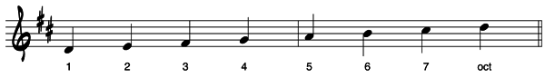
To the jazz musician a scale (mode) is also a source of harmony-chords-the notes of a scale stacked up in thirds-vertical. We all know about scale steps 1, 3, 5 and 7—they make up the tonic seventh chord or the "1" chord of the scale or mode. So, what about scale steps 2, 4 and 6? I, for one, have never heard of a ma2 chord or a mi4 chord. Here's how those notes are handled:
When used in chords, scale step 2 functions as the 9th of the chord, scale step 4 as the 11th and scale step 6 as the 13th, the harmonic spelling! The numbers now read like this: 1-3-5-7-9-11-13.
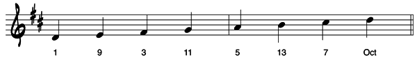
The numbers tell us exactly how any note of any scale functions in a chord—root, third, ninth, etc. If we re-arrange the scale into ascending numerical order (i.e. stacked in thirds–our new harmonic spelling) here's what we get—a 13th chord!
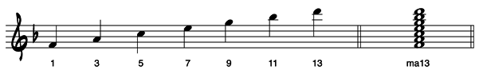
Jazz players deal with music both horizontally (the melody) and vertically (the harmony) at the same time!
A bit of Jazz Speak: The diatonic chords in any key are referred to as the "one chord", the "two chord", the "three chord"' and so on. NOT the "first chord", the "second chord", and the "third chord".
Major scale modes contain four types of 7th chords—the ma7, the mi7, the dominant7th and the mi7(b5) pronounced "minor seven flat five" (aka the ø7 – half-diminished). Like the ma7 chord, the quality of these diatonic chords is determined by the interval make-up of the modes from which they are derived. Remember that 7th chords are made up of the Root, 3rd, 5th (a triad) and 7th of the mode.
Major Scale Mode and 7th Chord Summary:
(Remember that any letter with or without sharps or flats attached may precede any of these symbols.)
Mode Scale type Chord symbols that call for each mode
1. Ionian major ma7, ∆7, ma6, 6/9, ma9, ma11, ma13
2. Dorian minor mi7, mi9, mi69, mi6, mi11, mi13
3. Phrygian minor mi7, mi7(-9, -13)
4. Lydian major ma7(#11), ma7(b5), ma6/9(+11), ma13(+11)
5. Mixolydian dominant 7, 9, 11, 13
6. Aeolian minor mi7, mi9, mi7(+5), mi7(b13)
7. Locrian minor mi7(b5), ø7
NB.
Some people use a ∆ to signify a ma7 chord. Not too common, but you need to be aware of what the symbol means in case you come across it.
A + (plus) and a # (sharp) in parentheses mean the same thing—the note is raised one half step. In jazz speak, you would say "major seven sharp 11" (ma7(#11) or "major seven plus 11" (ma7(+11).
A – (minus) and a b (flat) in parentheses mean the same thing—the note is lowered one half step. In jazz speak, you would say "minor seven flat five" (mi7(-5) or (mi7(b5).
To help you to recognize these chord and scale pairs (known in jazz jargon as chord/scales), I recommend that you practice playing them on the piano. Play the chord with your left hand and the mode (scale) with your right up and down a few times. For the scales and chords that follow– sounds you've probably never have heard before–it's imperative that you spend time at the piano. By the way, if you are adventurous enough to play the scale in thirds, fourths, fifths, sixths, or make up a melody using only the notes of the scale, you'll be improvising!
Jazz musicians, contrary to classical music rules, play the melodic minor scale the same both up and down–the Jazz Melodic Minor scale. Remember that the jazz musician is improvising on both the scale AND the chord. The tonic chord of the melodic minor scale is a mi ma7 (minor major seventh). If a jazz soloist has more than a couple of beats to play using this chord, upward and downward passages will have the same pitches in them to keep the integrity of the chord/scale intact. So, the chord/scale—the 1st mode of the jazz melodic minor scale—looks and sounds like this:
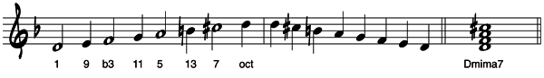
The second mode of the melodic minor scale and its chord is rarely used, so let's move on to modes 3-7.
The harmonic minor scale and the melodic min or scale share the same tonic chord – the mima7. Unless the melody of the song calls for the b13 found in the Harmonic minor scale, the melodic minor scale in normally used over a mima7 chord. The fifth mode of the harmonic minor scale, however, produces both a wonderful sound with the augmented second interval between the 2 nd and 3 rd scale step and its tonic chord – the 7(b9, b13) chord.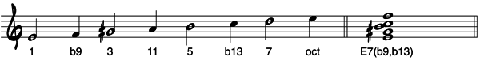
Symmetric scales are scales in which the pattern of whole steps and half steps that make them up repeats over and over within the space of an octave. The three most common symmetric scales are constructed using alternating whole steps and half steps, alternating half steps and whole steps and all whole steps—no half steps at all.
The first symmetric scale is made up of alternating whole steps and half steps. It produces a scale containing eight notes. It's called the Whole-half Diminished scale.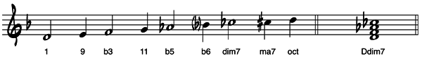
Its tonic chord is a dim7th—a diminished 7th chord not half-diminished. This scale has a fully diminished 7th chord in it—a diminished triad with a diminished 7th on top. The two other scales that have diminished triads in them, the Locrian mode from the major scale and the Locrian natural 9 from the melodic minor scale, both have minor 7th intervals above their roots—half diminished 7th chords.
The second symmetric scale is made up of alternating half steps and whole steps. It produces another eight note scale in which tonic chord is a dom7b9. It's called the Half-whole Diminished scale. It's known as the Octatonic scale in classical music circles.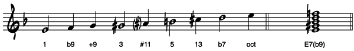
With a ma3 and a mi7 above the root, the half-whole scale is a dominant scale —just like the Mixolydian mode. In addition to having a #11 in it, also contains two altered 9’s – a b9 (lowered) and a #9 (raised). To correctly describe the chord-scale relationship of this scale, one of the altered 9's must be included in the tonic chord. The most common chord symbols for this scale are 7(b9), 7(#9) and 7(b9, 13). If the melody calls for it, the #11 is added to the symbol – 7(b9, #11). In case the +11 is called a b5, the chord symbol would be 7(b5, b9).
Did you notice that the notes found in the whole-half scale are, with a few enharmonic changes, the same as those found in the half-whole scale? One becomes a mode of the other.
The third symmetric scale is made up entirely of whole steps. It produces a six-note scale whose tonic chord is the dom7(+5). It's known everywhere as the whole-tone scale. Another name for this scale is the augmented hexatonic scale!! Yoiks!!
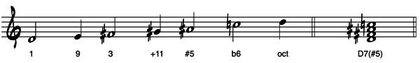
The whole-tone scale is a dominant scale. It has a ma3 and a mi7 above the root as do all other dominant scales. Like the Lydian dominant scale, the Altered scale, and the 8-note dominant scale, the whole-tone scale has a +11 in it. More importantly, the whole-tone scale has a +5 it just like the Altered scale. The whole-tone scale is also like the Altered scale in that it does not have a 13th in the scale; the Lydian dominant and the 8-note dominant do. The only difference between the Altered and whole-tone scales is that the Altered scale, like the 8-note dominant scale, has altered ninths (b9, #9) in it while the whole-tone scale has a natural 9 in it; the Lydian dominant does too.
Now that we are familiar with the building blocks of jazz improvisation, chord/scales, its time to put them together to make music.
The most common chord progression in jazz is the 2-5-1. It's the progression that defines a key. In C major, for example, the 2-5-1 would be Dmi7 (Dorian) to G7 (Mixolydian) to Cma7 (Ionian).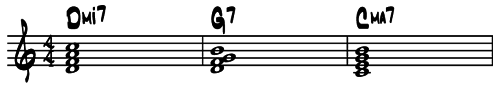
Any mi7 or mi7(b5) can be used for the "2" chord. Any dominant 7 chord may be used for the "5" chord. These chords may resolve to any minor or major chord. Here are a few examples:
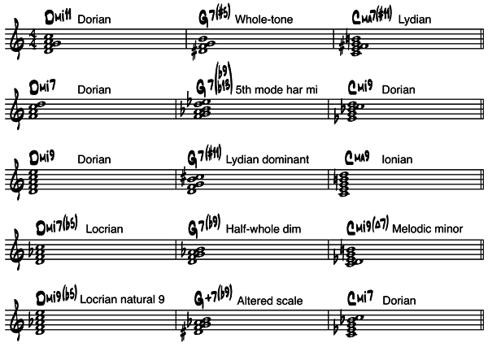
The 2 chord and the 5 chord may last anywhere from one beat to several measures each.
In this progression, the 6 chord is usually changed from a mi7 chord (Aeolian) to a dominant 7 chord (Mixolydian) setting up a secondary dominant relationship between the 6 chord and the 2 chord.
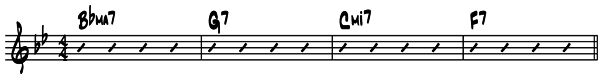
The diagonal lines in each bar are called "slash marks." They indicate how many beats a chord is to be played. In the example above each chord is played for four beats. In the next example, the duration of each chord varies from bar to bar. In the second line you'll see rhythmic variations, too.
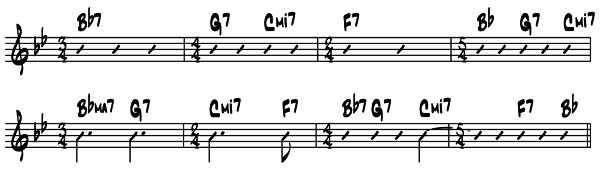
While these progressions are very common, bear in mind that in songs jazz musicians' play the chords can go anywhere harmonically. Keys can be changed in two beats!
Let's apply these chord/scales and common progressions to some songs commonly played by jazz musicians. With the exception of modal jazz tunes like So What, Impressions and Milestones (modal tunes with only two to four chords - no 2-5-1's), every song form we'll be looking at contains the 2-5-1 progression.
In major 2-5-1 progressions the 2 chord is always a minor 7th chord, the 5 chord is always a dominant 7th chord and the 1 chord is always a major 7th chord. In minor 2-5-1 progressions the 2 chord is usually a mi7(b5) chord, the 5 chord could be a chord with altered 9's and 5's and the 1 chord could be a mi7th or a mima7th chord.
The simplest blues progressions are usually played by blues and pop bands and go like this
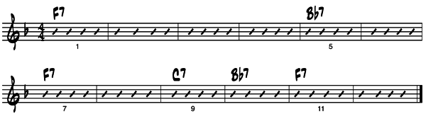
Leave it to the jazz player to add the 2-5-1 progression to the 12-bar blues to give it more harmonic interest: (Notice the 1-6-2-5 progression in the last t4o bars.)
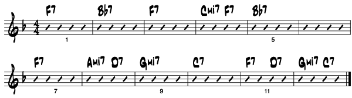
In both progressions the 4 chord is played in measure 5 for 8 beats, the 1 chord is played in measure 7, the turnaround back to the 1 chord happens in measure 9 and the 1 chord is played in measure 11. No matter how simple or complex the blues progression is, measures 5, 7, 9 and 11 are these target points are found in 99% of all jazz blues tunes.
This next blues progression is jazz blues harmony taken to its extreme. Known as Charlie Parker changes, it has resolved and unresolved 2-5 progressions all the way through. Here are the chord changes to the Parker tune Blues for Alice:
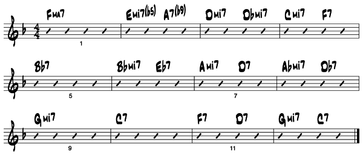
Charlie Parker liked to play these changes at metronome settings ranging from 240 to above 300 to the quarter note. Yoiks!! In spite of all of these chords the 4 chord is still played in measure 5, the turnaround back to the 1 chord still happens in measure 9 and the 1 chord is still played in measure 11, just like the first two sets of changes—the same target points. The only difference from the standard set of changes is that the 3 chord is used as a substitute for the 1 chord in measure 7. Many, many tunes have been written over blues progressions.
Rhythm changes, second in popularity with jazz musicians only to the blues, is the set of chord changes taken from the George Gershwin song I've Got Rhythm. It was first performed in the Broadway show Girl Crazy in 1930. The legendary tenor saxophone player, Coleman Hawkins, had this to say about the song: "I've Got Rhythm was an immediate hit with the jazz musicians of the 1930's. The changes were fun to play over; they could be altered, substituted for, bent this way and that, and otherwise reshaped creatively."
Like the 12-bar blues form, many jazz standards have been written over rhythm changes. It's not uncommon in jazz to find a melody or head based on the chord changes taken from another song. Some standard rhythm-changed based songs are Sonny Rollin’s Oleo, Miles Davis’ The Theme and Thelonious Monk’s Rhythm–A–Ning.
The first set of rhythm changes is very similar to the original tune. The second set, with its more complex harmonies was developed as jazz musicians allowed the changes to be "otherwise reshaped creatively." Both sets are interchangeable during solos.
Rhythm changes similar to the original song I've Got Rhythm.
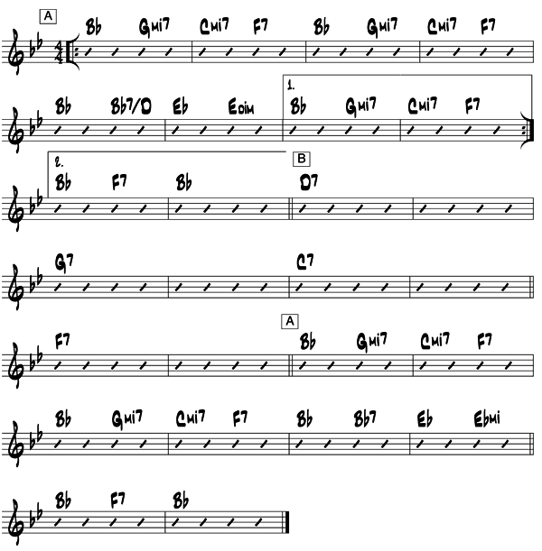
In the three repeats of letter A the only chord that is not diatonic to the key of Bb is the Ebmi chord on the 3rd beat of the 6th measure. Letter B, the bridge or channel, is a series of 5-1 relationships: D (5) to G (1), G (5) to C (1), C (5) to F (1) and finally, F (5) back to the tonic Bb (1) for the last repeat of letter A.
A more complex set of rhythm changes.
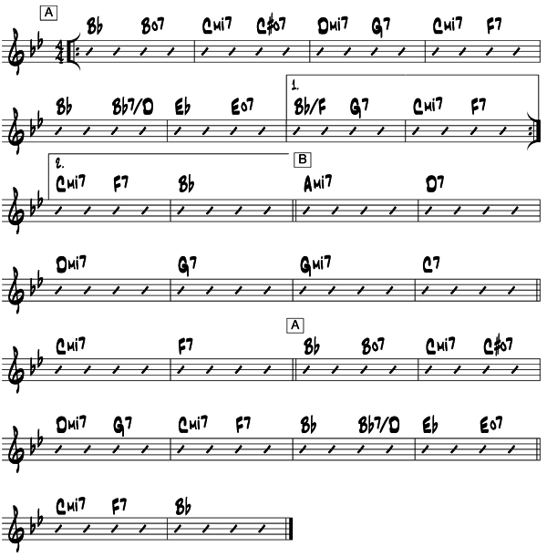
In letter A, non-diatonic diminished 7th chords have been added on the 3rd beat of measures 1, 2 and 6. The 6 chord, Gmi7 has been changed to a G7 chord. The bridge, letter B, is now a set of unresolved 2-5's that finally resolve back to the tonic Bb for the last repeat of letter A. While more challenging to solo over, remember that any part of this set of rhythm changes is interchangeable with the first set
Here are the changes to Charlie Parker's Scrapple From The Apple. We'll use then to point out the general characteristics of the A A B A song form:
I've said usually for all five general characteristics as there are A A B A tunes out there that are longer than 32 bars. Cherokee, for example, is 64 bars long while other songs have their way with the standard progressions. All five general characteristics of the A A B A song form can be bent and "otherwise reshaped creatively."
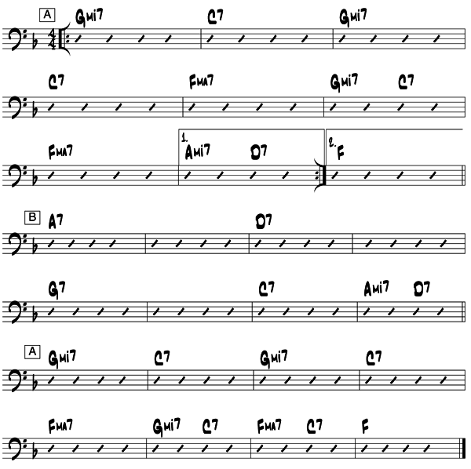
Here's Alice in Wonderland, the theme song from the movie of the same name. Which of the five general characteristics of the A A B A song form does it follow or not follow?

The A B A C song form
General characteristics of the A B A C song form:
Remember that all these rules are meant to be broken in the same ways as the A A B A form!
Let's check out Green Dolphin Street – the theme song from the 1940’s movie of the same name. By the way, letter A is usually played with a Latin feel while letters B and C are played with a swing feel and the last 4 measures of the song are repeated over and over for an ending—or not.
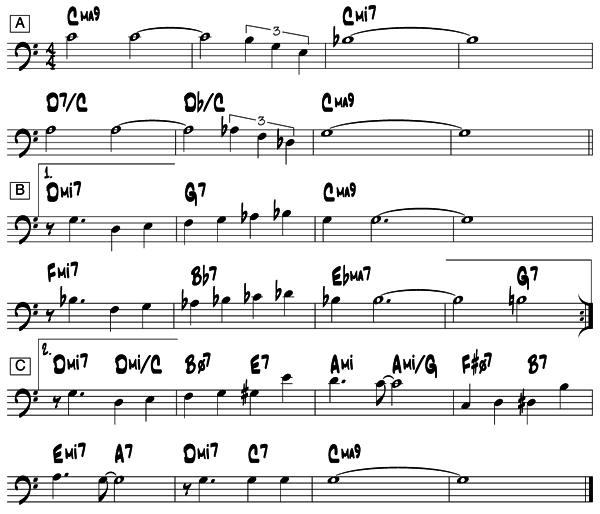
Here is another A B A C song Someday My Prince Will Come from the movie Snow White and the Seven Dwarfs. Jazz players can turn any song into a vehicle for improvisation!
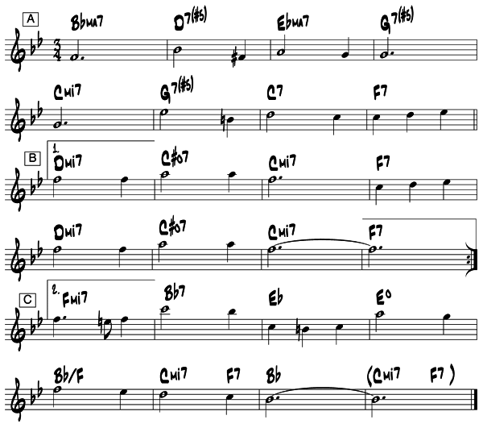
Other song forms
While the 12-bar blues, the A A B A and the A B A C song forms are the most prevalent in jazz, many other song forms are also employed. Among them:
A B C D - usually 32 measures long and has 4 sections each with different melodic and
harmonic material—Harold Arlen's Come Rain Or Come Shine and Ray Henderson's Bye Bye Blackbird.
A A B C - usually longer than 32 measures long - letter C is new melodic and harmonic stuff different from letter A—Arthur Swartz's Alone Together (14-14-8-8 ) and Richard Rogers' Where Or When (10-10-5-12);
A B - usually 16 measures long—Kenny Dorham's Blue Bossa, Sonny Rollins' St. Thomas, Tadd Dameron's Lady Bird and John Coltrane's Giant Steps.
A B C - has 3 distinct sections of melody and harmony—Wayne Shorter's Miyako and Joe Zawinul's Mercy, Mercy, Mercy.
A B A - has only 2 different sections of material—John Coltrane's Like Sonny Thelonious Monk's Brilliant Corners.
A A B - has 2 sets of material with letter A repeated—Cole Porter's Night And Day and Horace Silver's Song For My Father.
Song forms unique to a particular song—one off's—Bill Evans' Blue And Green (10 measures long); Chick Corea's Windows (48 measures long, A B C D E), Monk's Epistrophy (24 measures long, A B A C), Horace Silver's Barbara (76 measures long, A B A C D E) and Cole Porter's Begin The Beguine (108 measures long(!), (A A B C D E).
While this section in no way addresses all of the complexities and idiosyncrasies of improvised jazz music, it does serve to remind you of the theory you've had and how it can be applied to music in the present tense: music that is being invented on the spot in any key and at any tempo. To the jazz musician, the theory and structure of songs is a language that is spoken through saxophones, pianos, trumpets and any other instrument you can think of. Jazz is an ever-changing, vital force that fills the void between the mundane and the apex of creativity.